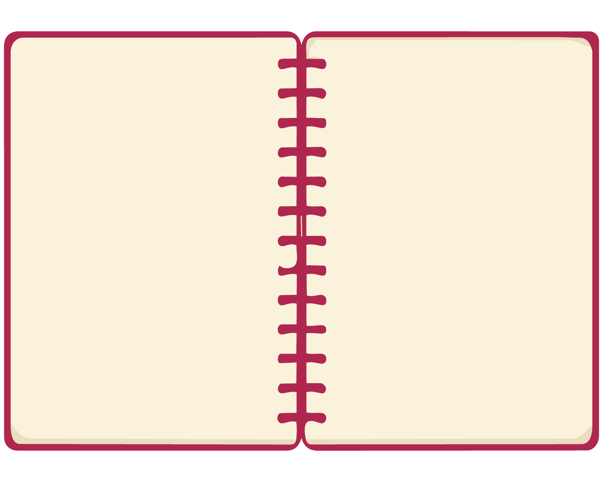
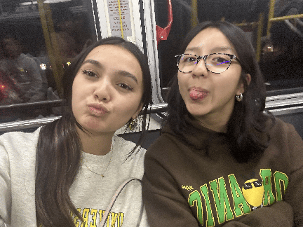
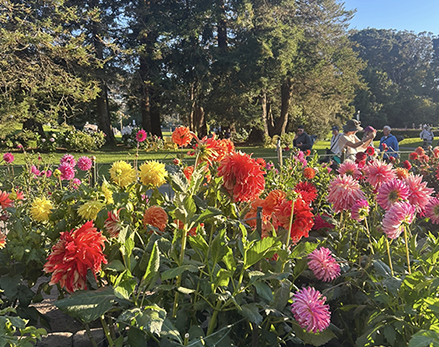
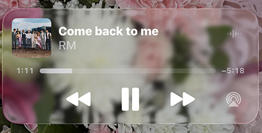
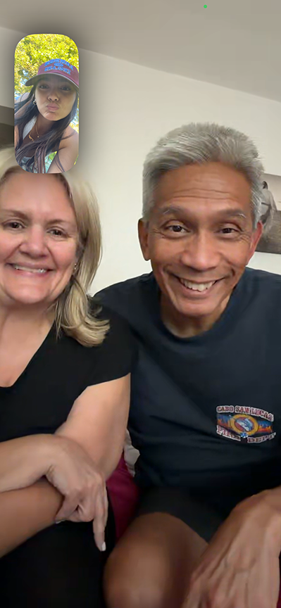
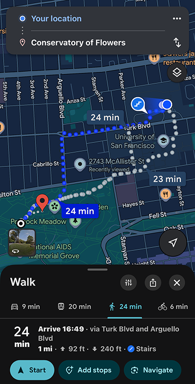
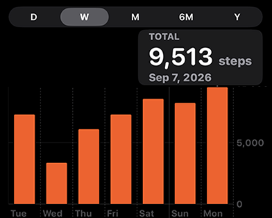

the designer ⋆˚࿔


Final Results
This is me taking
a picture with my
friend in the bus
on our way back
from Naya. It's a
yummy dessert
spot on Geary Blvd!

I went to Golden Gate Park
and saw these beautiful dahlias!

Some music for the walk

When I was laying at the park,
I facetimed my parents

I used the map to find the
time it took to the park.
Steps for the day!

Laptop
I love using my laptop for a little bit of everything! Whether I’m getting schoolwork done, coding, checking Canvas, completing assignments, or taking notes, it’s always there to help me stay organized. When I’m not doing schoolwork, I love listening to music , scrolling through Pinterest for creative inspiration, and just exploring different things online. ᯓ★
BADGIRLRIRI always
This was me making my ramen website
Had to check on all my school work
Love using my notes app for all kinds of quick ideas
Scrolling through pinterest for ideas is a must
Airdrop Across Devices
I love using my iPad for taking notes and keeping everything organized! Features like AirDrop make it super easy to send photos, notes, and files between devices, which I think is so cool! I love seeing how all my devices can interact and work together. It makes everything feel more convenient and honestly a little more fun! ݁ ˖Ი𐑼⋆
Cross Device Features like Airdrop show technological efficiency 𑄝੭
Used iPad for notes then airdropped to laptop .☘︎ ݁˖
Writing for Typography class on Goodnotes .𖥔 ݁ ˖
Design Research
I love using my devices together when I’m researching and planning things, especially for projects like Design Collective field trips! Having my phone and laptop open at the same time makes everything so much easier and more efficient. I can research on my laptop while using my phone to take notes, check maps, save ideas, or quickly look something up. .ᐟ.ᐟ
Time to research for Design Collective field trips. First idea - Museum!
check out museum of craft and design ࣪ ˖𖦹°⋆
Went on Design Collective Instagram to gather information on where we've
gone in previous years
follow design collective's insta ִ ࣪𖤐.ᐟ